随机森林算法入门
前言： 随机森林是一个非常灵活的机器学习方法，从市场营销到医疗保险有着众多的应用。它可以用于市场营销对客户获取和存留建模或预测病人的疾病风险和易感性。
随机森林能够用于分类和回归问题，可以处理大量特征，并能够帮助估计用于建模数据变量的重要性。
这篇文章是关于如何使用Python构建随机森林模型。
1 什么是随机森林
随机森林可以用于几乎任何一种预测问题（包括非线性问题）。它是一个相对较新的机器学习策略（90年代诞生于贝尔实验室）可以用在任何方面。它属于机器学习中的集成学习这一大类。
1.1 集成学习
集成学习是将多个模型进行组合来解决单一的预测问题。它的原理是生成多个分类器模型，各自独立地学习并作出预测。这些预测最后结合起来得到预测结果，因此和单独分类器的结果相比，结果一样或更好。
随机森林是集成学习的一个分支，因为它依靠于决策树的集成。更多关于python实现集成学习的文档： Scikit-Learn 文档。
1.2 随机决策树
我们知道随机森林是将其他的模型进行聚合， 但具体是哪种模型呢？从其名称也可以看出，随机森林聚合的是分类（或回归） 树。一颗决策树是由一系列的决策组合而成的，可用于数据集的观测值进行分类 。
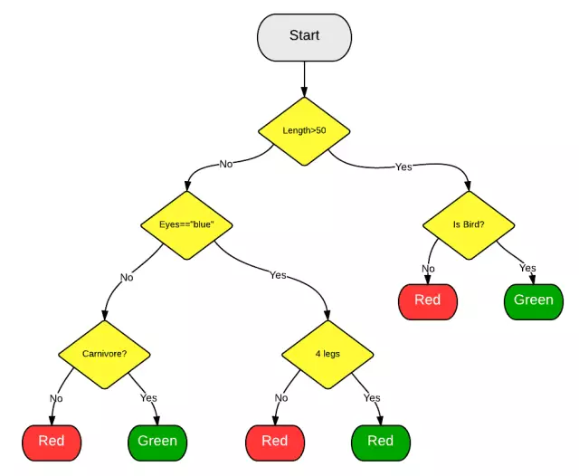
1.3 随机森林
引入的随机森林算法将自动创建随机决策树群。由于这些树是随机生成的，大部分的树(甚至 99.9%)对解决你的分类或回归问题是没有有意义。
1.4 投票
那么，生成甚至上万的糟糕的模型有什么好处呢？好吧，这确实没有。但有用的是，少数非常好的决策树也随之一起生成了。
当你要做预测的时候，新的观察值随着决策树自上而下走下来并被赋予一个预测值或标签。一旦森林中的每棵树都给有了预测值或标签，所有的预测结果将被归总到一起，所有树的投票返回做为最终的预测结果。
简单来说，99.9%不相关的树做出的预测结果涵盖所有的情况，这些预测结果将会彼此抵消。少数优秀的树的预测结果将会脱颖而出，从而得到一个好的预测结果。
2 为什么要用它
随机森林是机器学习方法中的Leatherman（多功能折叠刀）。你几乎可以把任何东西扔给它。它在估计推断映射方面做的特别好，从而不需要类似SVM医一样过多的调参（这点对时间紧迫的朋友非常好）。
2.1 一个映射的例子
随机森林可以在未经特意手工进行数据变换的情况下学习。以函数f(x)=log(x)为例。
我们将在Yhat自己的交互环境Rodeo中利用Python生成分析数据，你可以在here下载Rodeo的Mac,Windows和Linux的安装文件。
首先，我们先生成一下数据并添加噪声。
import numpy as np
import pylab as pl
x = np.random.uniform(1, 100, 1000)
y = np.log(x) + np.random.normal(0, .3, 1000)
pl.scatter(x, y, s=1, label="log(x) with noise")
pl.plot(np.arange(1, 100), np.log(np.arange(1, 100)), c="b", label="log(x) true function")
pl.xlabel("x")
pl.ylabel("f(x) = log(x)")
pl.legend(loc="best")
pl.title("A Basic Log Function")
pl.show()
得到如下结果：
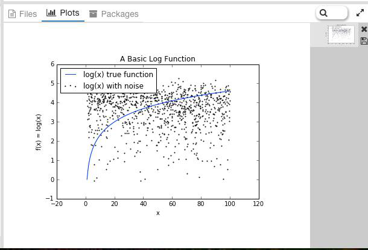
如果我们建立了一个基本的线性模型通过使用x来预测y，我们需要作一条直线，一定成都市算是平分log(x)函数。而如果我们使用随机森林算法，它可以更好的逼近log(x)曲线从而使得它看起来更像实际的函数。
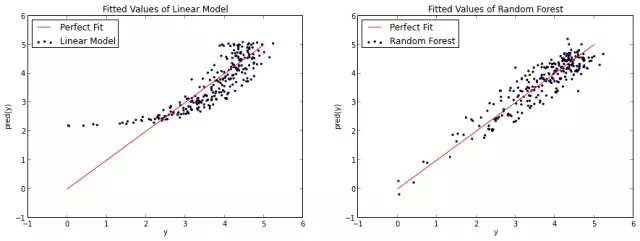
 当然，你也可以说随机森林对log(x)函数有点过拟合。不管怎么样，这说明了随机森林并不限于线性问题。
3 使用方法
3.1 特征选择
随机森林的一个最好用例是特征选择。尝试很多个决策树变量的一个副产品就是，你可以检查变量在每棵树中表现的是最佳还是最糟糕。
当一些树使用一个变量，而其他的不使用这个变量，你就可以对比信息的丢失或增加。实现的比较好的随机森林工具能够为你做这些事情，所以你需要做的仅仅是去查看那个方法或参数。
在下述的例子中，我们尝试弄明白区分红酒或白酒时，哪些变量是最重要的。
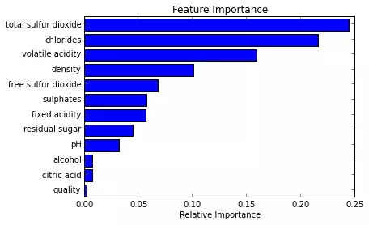
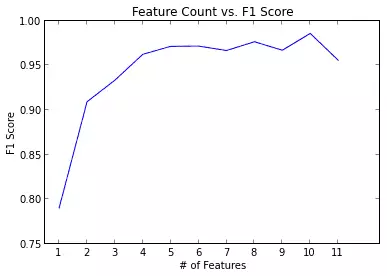
3.2 分类
随机森林也很善长分类问题。它可以被用于为多个可能目标类别做预测，它也可以在调整后输出概率。你需要注意的一件事情是过拟合。
随机森林容易产生过拟合，特别是在数据集相对小的时候。当你的模型对于测试集合做出“太好”的预测的时候就应该怀疑一下了。避免过拟合的一个方法是在模型中只使用有相关性的特征，比如使用之前提到的特征选择。
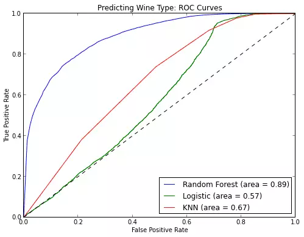
3.3 回归
随机森林也可以用于回归问题。
我发现，不像其他的方法，随机森林非常擅长于分类变量或分类变量与连续变量混合的情况。
4 一个简单的Python示例
from sklearn.datasets import load_iris
from sklearn.ensemble import RandomForestClassifier
import pandas as pd
import numpy as np
iris = load_iris()
df = pd.DataFrame(iris.data, columns=iris.feature_names)
df['is_train'] = np.random.uniform(0, 1, len(df))
下面就是你应该看到的结果了。由于我们随机选择数据，所以实际结果每次都会不一样。
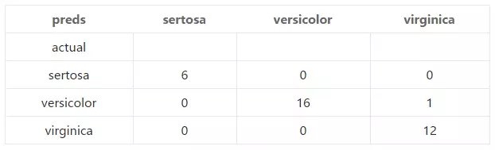
5 结语
随机森林相当起来非常容易。不过和其他任何建模方法一样要注意过拟合问题。如果你有兴趣用R语言使用随机森林，可以查看randomForest包。
当然，你也可以说随机森林对log(x)函数有点过拟合。不管怎么样，这说明了随机森林并不限于线性问题。
3 使用方法
3.1 特征选择
随机森林的一个最好用例是特征选择。尝试很多个决策树变量的一个副产品就是，你可以检查变量在每棵树中表现的是最佳还是最糟糕。
当一些树使用一个变量，而其他的不使用这个变量，你就可以对比信息的丢失或增加。实现的比较好的随机森林工具能够为你做这些事情，所以你需要做的仅仅是去查看那个方法或参数。
在下述的例子中，我们尝试弄明白区分红酒或白酒时，哪些变量是最重要的。
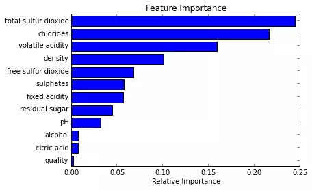
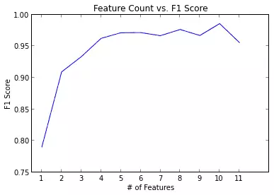
3.2 分类
随机森林也很善长分类问题。它可以被用于为多个可能目标类别做预测，它也可以在调整后输出概率。你需要注意的一件事情是过拟合。
随机森林容易产生过拟合，特别是在数据集相对小的时候。当你的模型对于测试集合做出“太好”的预测的时候就应该怀疑一下了。避免过拟合的一个方法是在模型中只使用有相关性的特征，比如使用之前提到的特征选择。
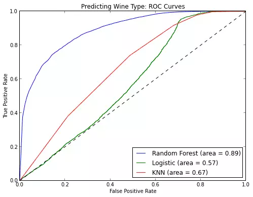
3.3 回归
随机森林也可以用于回归问题。
我发现，不像其他的方法，随机森林非常擅长于分类变量或分类变量与连续变量混合的情况。
4 一个简单的Python示例
from sklearn.datasets import load_iris
from sklearn.ensemble import RandomForestClassifier
import pandas as pd
import numpy as np
iris = load_iris()
df = pd.DataFrame(iris.data, columns=iris.feature_names)
df['is_train'] = np.random.uniform(0, 1, len(df))
下面就是你应该看到的结果了。由于我们随机选择数据，所以实际结果每次都会不一样。
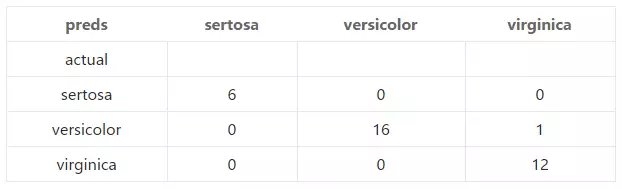
5 结语
随机森林相当起来非常容易。不过和其他任何建模方法一样要注意过拟合问题。如果你有兴趣用R语言使用随机森林，可以查看randomForest包。